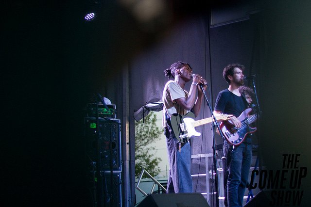

더불어 nomad 버전은 전자음악 기반의 R&B 장르로 리믹스, 파트별로 분위기가 전환되는 다채로운 구성과 실험적인 사운드가 듣는 재미를 배가시키며, Slom 버전은 아날로그 악기가 자아내는 클래식한 느낌과 트렌디한 사운드가 어우러져 과거와 현재 음악 스타일의 조화를 선사한다.

또한 2018년 1월 발매된 레드벨벳 정규 2집 리패키지 타이틀 곡 'Bad Boy'는 공개 당시 각종 음원 및 음반 차트 1위, 음악 방송 1위를 비롯해 각종 글로벌 차트 석권은 물론, 미국 빌보드 '비평가들이 선정한 2018 베스트 K-POP송 20' 1위 등 뜨거운 반응을 얻었으며, 2021년 1월 뮤직비디오 유튜브 조회수 3억뷰를 돌파하는 등 꾸준한 사랑을 받고 있어, 이번 리믹스 싱글도 높은 관심이 기대된다.